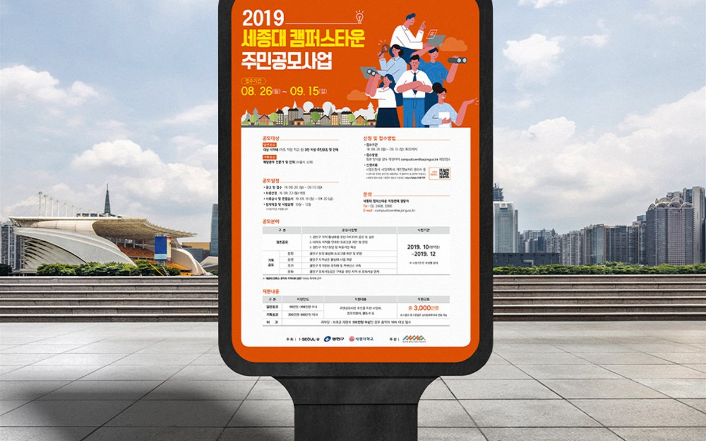

학회 포스터 제작, A0 대형 인쇄 마감은 며칠 걸릴까?
- 2026.09.10
- 6분 분량
- 퍼스트디자인 대전지사

목차 ▾
■ 핵심 요약 ① 학회 포스터의 본문 글자는 1m 거리에서 읽히는 24포인트 이상, 제목은 3m 거리에서 읽히는 72포인트 이상으로 잡아야 합니다. |
안녕하세요, 퍼스트디자인 대전지사입니다. 유성구의 대학과 연구기관에서는 학회 시즌마다 포스터 발표 준비로 바쁩니다. 논문 내용은 다 준비됐는데 포스터 한 장에 어떻게 담아야 할지, A0 출력은 어디에 맡겨야 하고 며칠이 걸리는지 문의가 많습니다. 오늘은 학회 포스터를 준비하는 순서와 마감 기준을 정리해 드리겠습니다.
학회 포스터 규격은 무엇부터 확인해야 할까?
학회마다 포스터 규격이 다릅니다. 국내 학회는 A0 세로(841×1189mm)가 가장 많고, 국제 학회는 90×120cm나 36×48인치처럼 인치 단위 규격을 쓰기도 합니다. 가로형인지 세로형인지, 게시판에 핀으로 고정하는지 클립으로 거는지에 따라 여백과 재질도 달라집니다. 규격을 확인하지 않고 A0 세로로 만들었다가 현장 게시판이 가로형이어서 잘려 나가는 경우를 실제로 봅니다.
그래서 저희는 학회 안내문의 포스터 규정 페이지를 먼저 받아 규격·방향·게시 방식을 확인하고, 규격이 없으면 A0 세로를 기본으로 하되 학회 사무국에 확인해 드립니다.

논문 한 편을 포스터 한 장에 어떻게 담을까?
포스터는 논문 요약본이 아니라 '대화의 시작점'입니다. 발표자가 옆에 서서 설명하기 때문에 모든 내용을 넣을 필요가 없고, 오히려 심사위원과 참가자가 3초 안에 주제를 파악하고 1분 안에 핵심 결과를 읽을 수 있어야 합니다. 저희가 잡는 기본 구성은 아래와 같습니다.
| 영역 | 면적 비율 | 구성 기준 |
| 제목 · 저자 · 소속 | 10% | 제목 72pt 이상, 소속 로고 규정 준수 |
| 연구 배경 · 목적 | 15% | 3~4문장, 핵심 질문 한 줄 강조 |
| 방법 · 결과 | 55% | 그래프 2~4개, 그래프마다 한 줄 결론 |
| 결론 · 참고문헌 · 연락처 | 20% | 결론 3줄, QR코드로 논문 · 연락처 연결 |
그래프는 논문 파일의 그림을 그대로 붙이면 선이 얇고 글자가 작아 A0에서 읽히지 않습니다. 저희는 그래프를 벡터로 다시 그리고 축 글자를 키우며, 강조할 데이터 계열만 색을 남깁니다. 본문 글자는 24포인트 이상, 그래프 축 글자도 18포인트 이상을 유지합니다.
A0 대형 출력은 며칠 걸리고 어떤 재질이 좋을까?
대형 출력 자체는 시안 확정 후 1영업일이면 됩니다. 시간이 걸리는 쪽은 디자인과 수정입니다. 논문 원고와 그래프 원본 파일이 준비되어 있으면 초안 2영업일, 수정 1~2영업일, 출력 1영업일로 약 일주일이면 충분하고, 급하면 시안 확정 당일 출력도 가능합니다.
재질은 일반 코팅지, 천 소재 패브릭 포스터, 접히지 않는 폼보드 부착 중에서 고릅니다. 해외 학회처럼 비행기로 가져가야 하면 접어서 가방에 넣을 수 있는 패브릭 포스터가 편하고, 국내 학회는 코팅지에 지관 케이스로 드리는 것이 일반적입니다. 대전 시내 대학·연구기관은 직접 전달도 가능합니다.
발표 준비를 편하게 만드는 팁은 무엇일까?
포스터와 함께 A4 축소본을 20~30장 준비해 두면 관심 있는 참가자에게 바로 건넬 수 있습니다. 축소본 하단에 논문 링크 QR코드와 이메일을 넣어 두면 학회가 끝난 뒤 연락이 이어집니다. 같은 데이터로 발표용 슬라이드 3장을 미리 만들어 두면 구두 발표 세션이 추가돼도 당황하지 않습니다. 저희는 포스터를 만들 때 이 세 가지를 세트로 준비해 드립니다.
자주 묻는 질문
Q. 유성구 대학원생인데 포스터 한 장만 맡겨도 되나요?
A. 네. 한 장부터 진행합니다. 논문 파일과 그래프 원본을 보내주시면 규격 확인부터 출력까지 처리해 드립니다.
Q. 학회가 3일 뒤인데 지금 맡겨도 가능한가요?
A. 원고와 그래프가 준비되어 있으면 가능합니다. 첫날 초안, 둘째 날 수정과 확정, 셋째 날 출력과 전달 순서로 진행합니다.
Q. 영문 포스터도 만들 수 있나요?
A. 네. 국제 학회용 영문 포스터는 영문 원고를 주시면 그대로 편집하고, 국문 원고만 있으면 자체 번역 부서가 번역해 드립니다.
Q. 같은 연구실에서 여러 장을 맡기면 할인이 되나요?
A. 네. 같은 학회에 여러 장을 출품하는 연구실은 템플릿을 공유해 디자인 비용을 낮추고, 출력도 함께 진행해 장당 단가를 조정해 드립니다.
| 12년+ 편집 디자인 경력 | 3200+ 납품한 프로젝트 | 98% 재의뢰 · 소개 비율 | 400+ 정부지원사업 · 바우처 수행 |
퍼스트디자인 대전지사는 대덕연구단지와 정부대전청사, 세종·청주·공주 충청권의 연구기관·바이오 기업·공공기관·제조기업 홍보물을 전담합니다. 기획·디자인·번역·촬영·인쇄를 한 팀에서 처리하고, 자체 인쇄소에서 소량 디지털 인쇄부터 대량 옵셋 인쇄까지 직접 진행합니다. 초안을 먼저 확인받고 진행하는 방식으로 12년간 3,200건 이상을 납품했습니다.
KAIST·충남대·대덕연구단지 연구기관의 학회 포스터, 세미나 포스터, 공모전 포스터 제작이 필요하시면 학회 규정과 원고를 보내주세요. 규격 확인부터 출력·전달까지 한 팀이 진행합니다. 상담은 1600-9487(평일 09:00~18:00) 또는 work@firstmkt.co.kr로 문의해 주세요. 대전·세종·충청권은 직접 방문 미팅도 가능합니다.
FIRST DESIGN DAEJEON
제작을 검토 중이신가요?
제작물 종류와 수량만 알려주시면 당일 견적과 일정을 안내드립니다. 기획부터 디자인·인쇄·납품까지 한 팀이 진행합니다.
제작 전에 자주 받는 질문
퍼스트디자인 대전지사가 상담 자리에서 실제로 많이 듣는 질문을 정리했습니다.
원고가 아직 정리되지 않았는데 상담이 가능한가요?
네. 목적과 독자만 정해져 있으면 됩니다. 연구성과집이든 제품 카탈로그든 원고 구조화부터 함께 시작하고, 표와 도식은 디자인 단계에서 다시 그립니다. 대전·세종·충청권은 방문 미팅에서 원고를 펼쳐 놓고 목차부터 잡아 드립니다.
초안은 언제 볼 수 있나요?
전체 디자인에 들어가기 전에 앞부분 몇 페이지를 먼저 디자인해 초안으로 보여드립니다. 초안 방향이 확정된 뒤 전체 작업을 진행하기 때문에 완성 단계에서 처음부터 다시 만드는 일이 없습니다.
인쇄까지 맡기면 무엇이 달라지나요?
자체 인쇄소에서 색 교정과 감리를 같은 팀이 진행하기 때문에 화면과 인쇄물의 색 차이를 끝까지 관리할 수 있습니다. 용지·코팅·제본 실물 샘플을 보고 사양을 정할 수 있고, 납품 일정도 한 곳에서 책임집니다.
FIRST DESIGN DAEJEON
상담 설문지 작성하고디자인 전문가에게 무료 상담 받기